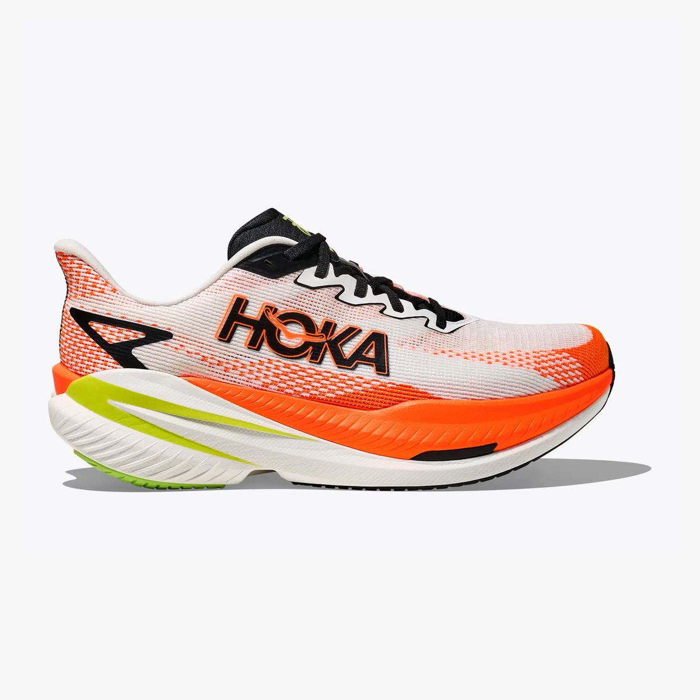
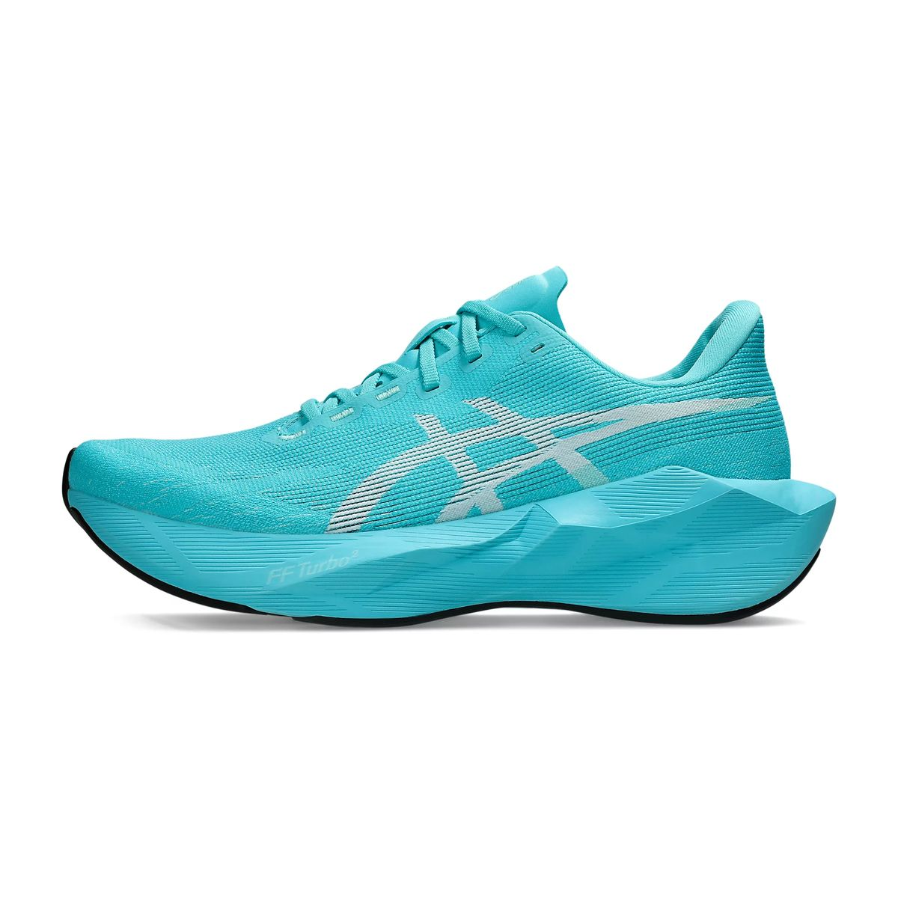
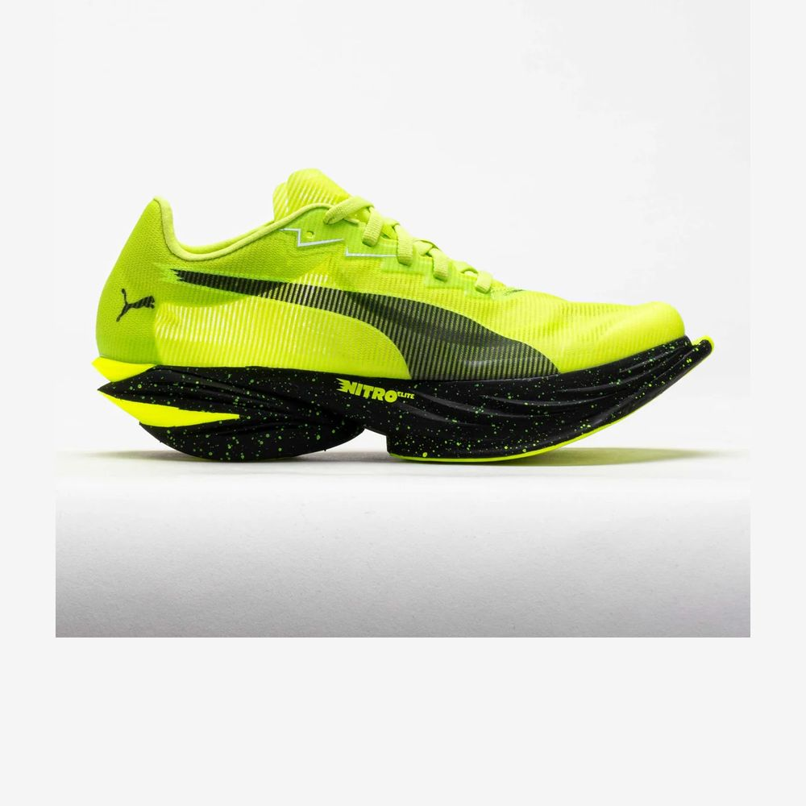
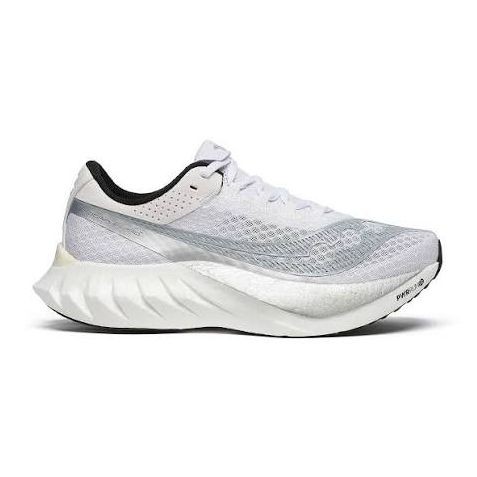
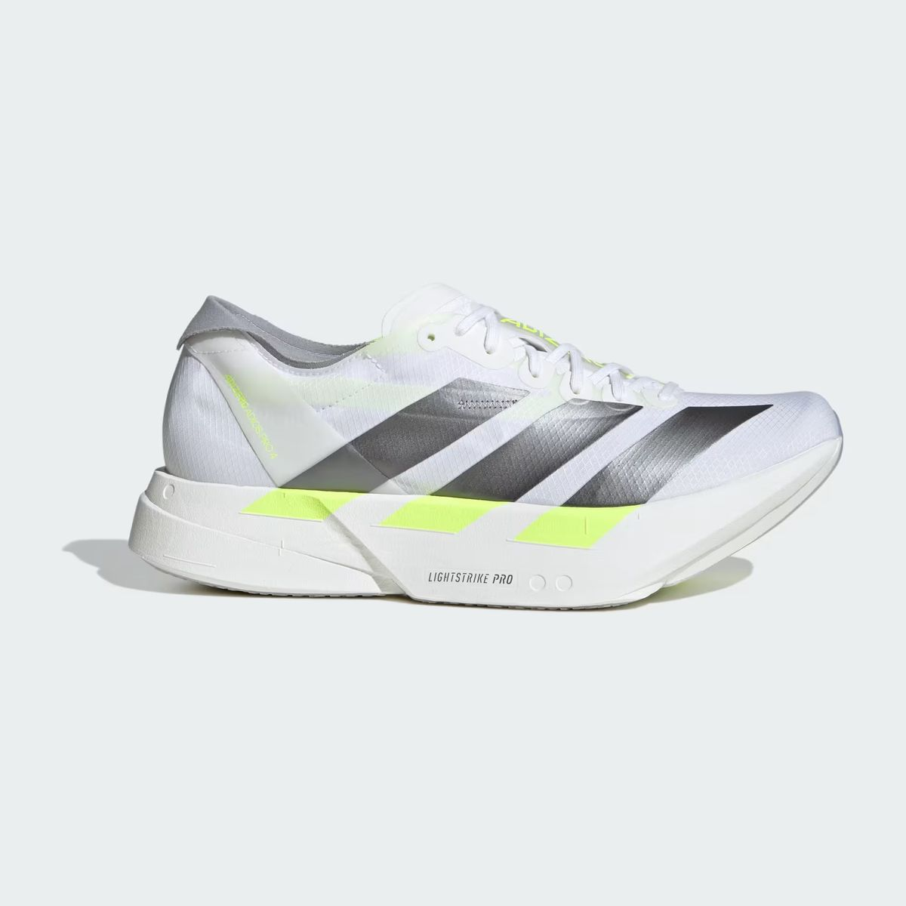
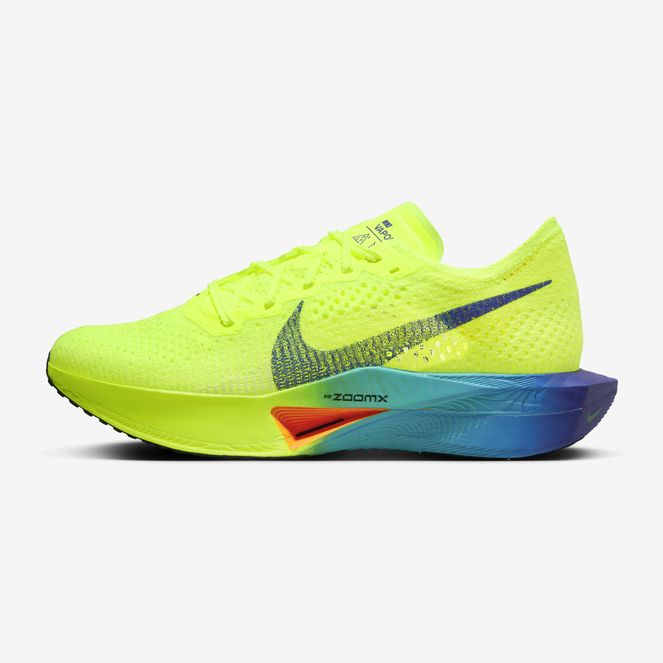
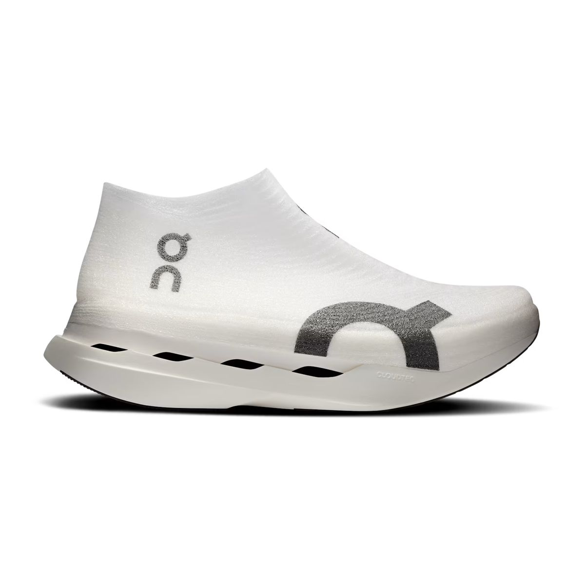
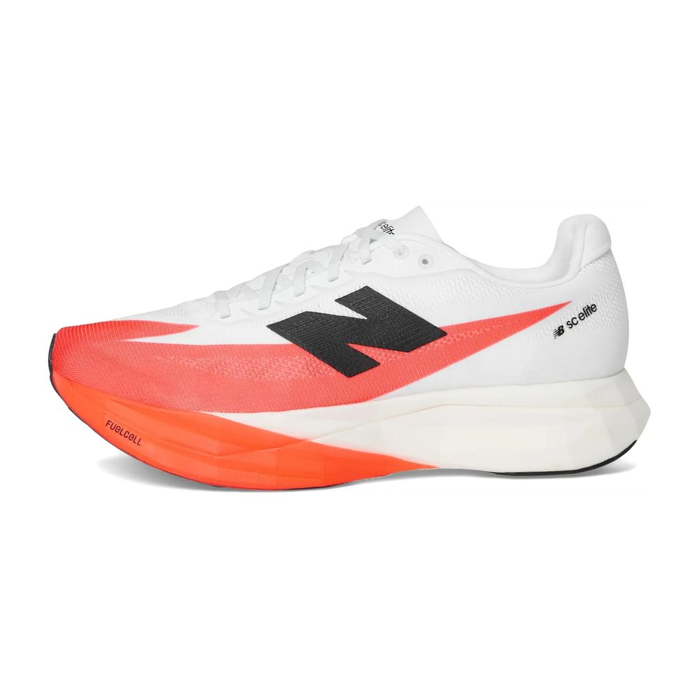
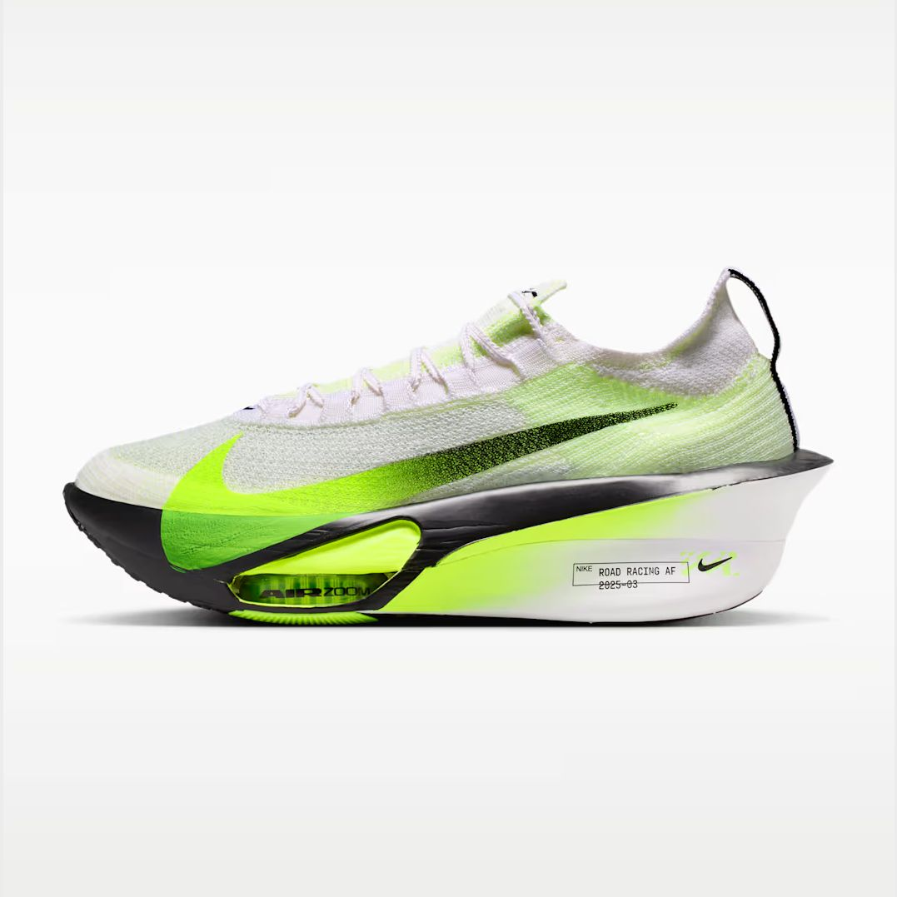
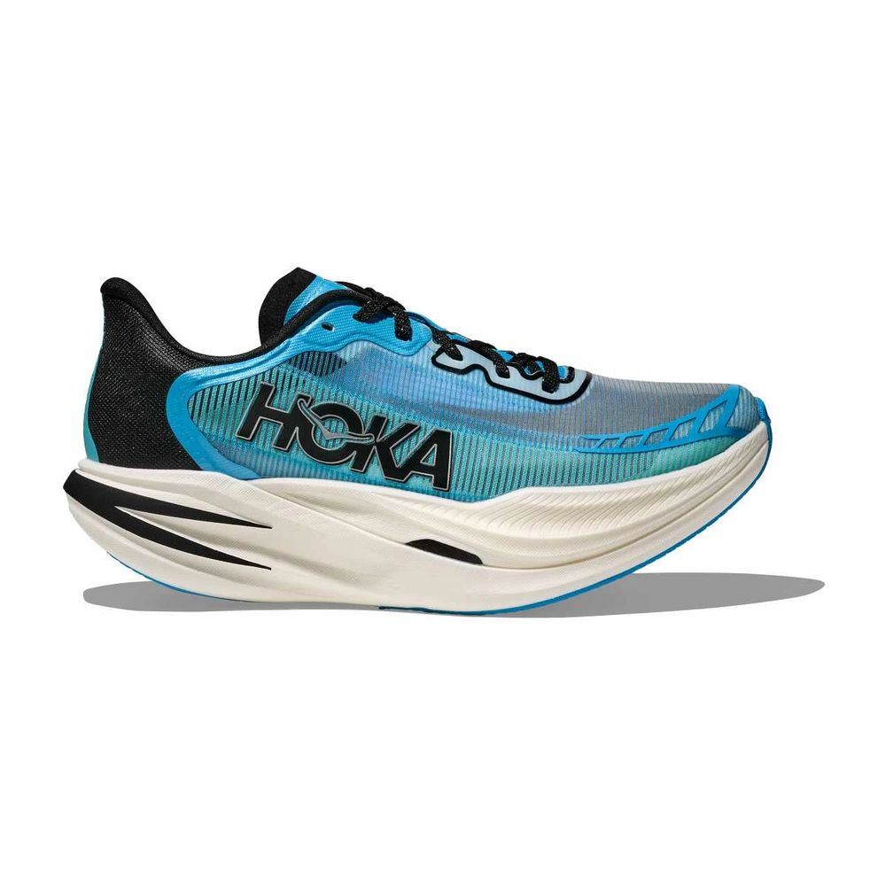

01

HokaSuper trainer · 8.9 oz · 5 mm
Mach X 3
The default answer. Enough plate to push the 8K splits, enough rubber up front to hold a sled push. Runners rank it #1 for stations.
Eight kilometers of running broken up by sleds, burpees and carries. The fastest shoe isn't the best shoe here; the one that survives the stations is. Ranked by our testing, the expert consensus, and 612 runners who've raced in them.
The fastest shoe isn't the best shoe here.
— HOW WE RANK FOR HYROXWeighted blend of the three tiers: 40% RunnerDrops testing (we raced in each pair), 30% expert consensus, 30% runner reviews filtered to people who mention HYROX, sled work or station racing. Shoes we haven't tested yet are ranked on the other two tiers and marked. Re-ranked every Monday as reviews come in.

The default answer. Enough plate to push the 8K splits, enough rubber up front to hold a sled push. Runners rank it #1 for stations.

Unplated, which is the point: stable on the lateral stations and no calf tax on the burpee broad jumps. Best value here.

The racers' pick. Lightest plated shoe on the list, and the PWRPLATE is forgiving enough for farmer carries. Narrow heel though.

More shoe than the Elite, less money. Wider platform than most carbon racers, which matters on the wall balls.

Fast and soft, but the soft narrow heel is a liability on sled pull. Pro Solo and Elite 15 territory only.

Reliable, widely available, and a known quantity. Outsole is the weak point on the SkiErg-to-sled transition.

Grippy and stable, but the price and low drop make it a hard sell for a station race.

Low 4 mm drop and a firm platform. Good for midfoot strikers, divisive for everyone else.

